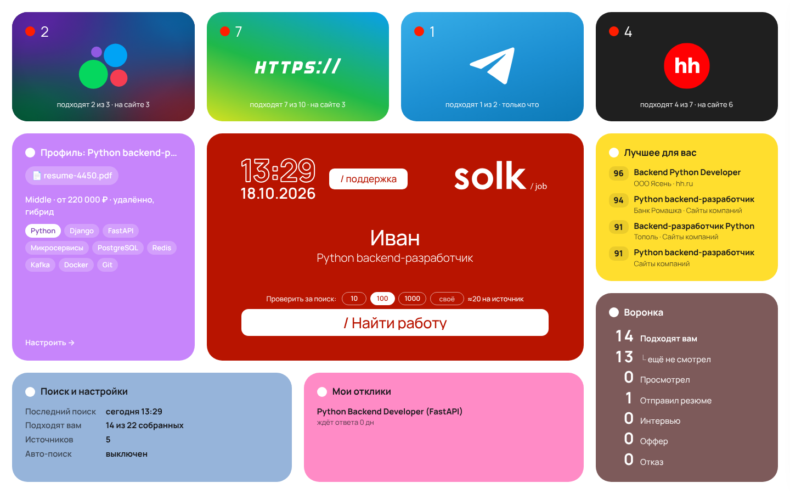

Работа сама находит вас
Загрузите резюме — solk / job соберёт вакансии с hh.ru, Avito, из Telegram-каналов и с сайтов компаний и покажет, какие подходят именно вам. Бесплатно.
Для Яндекс Браузера, Chrome, Edge и Opera на компьютере.

Три шага — и поиск идёт сам
Установите
Одна кнопка «Установить» — расширение появится в браузере и будет обновляться само.
Загрузите резюме
Профиль заполнится сам: должность, навыки, город. Поиски на hh.ru и Avito настроятся сразу.
Нажмите «Найти работу»
На главной видно, сколько вакансий подходит в каждом источнике, и «Подходит мне 87%» у каждой.
Установка
- Нажмите «Установить бесплатно» вверху страницы.
- В открывшемся каталоге нажмите «Добавить в Яндекс Браузер» или «Установить».
- Откроется главная solk / job — перетащите туда резюме.
Частые вопросы
Это правда бесплатно?
Да, полностью. Во время поиска на главной показывается рекламный блок Яндекса — так проект зарабатывает и остаётся бесплатным.
Куда уходит моё резюме?
Никуда. Резюме, профиль и вакансии хранятся только в вашем браузере. Подробнее — в политике конфиденциальности.
Нужно ли входить в hh.ru, Avito или Telegram?
Нет. Расширение открывает сайты в вашем браузере, как вы сами, — с паузами и человеческой скоростью.
Работает на телефоне?
Пока только на компьютере: в Яндекс Браузере, Chrome, Edge и Opera.
Можно получать вакансии в Telegram?
Да: в расширении «Поиск и настройки» → «Уведомления в Telegram» → «Подключить». Бот поддержки отвечает и на любые вопросы о solk / job.
Как обновлять?
Ничего делать не нужно: браузер обновляет расширение из каталога сам.